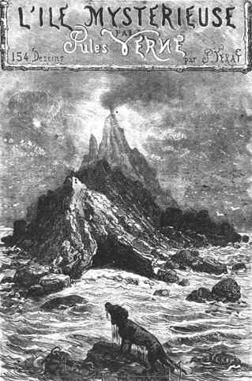

THE MYSTERIOUS ISLAND
by
Unabridged translation
from the French by
Original illustrations by
Jules-Descartes Férat

Translation copyright © 1992 by Sidney Kravitz, 592 Herrick Drive, Dover,
New Jersey 07801-2013
This translation may be distributed and copied freely, in its
entirety, for personal use. All original translator and copyright
information must remain intact. Any sales or other uses of this document
are expressly forbidden without the specific consent of the translator
and copyright owner.
This unedited translation by Sidney Kravitz was subsequently edited by
Arthur B. Evans and, together with an introduction and critical material
by William Butcher, was published in 2001 by Wesleyan University Press.
The ISBN of the hard cover version of this edition is 0-8195-6475-3. The
ISBN of the soft cover version is 0-8195-6559-8. To purchase a copy, call
toll-free at 1-800-421-1561 or order online at UPNE.
Edited to HTML by Zvi Har'El
JV.Gilead.org.il
Copyright © Zvi
Har'El
$Date: 2007/12/23 17:44:40 $